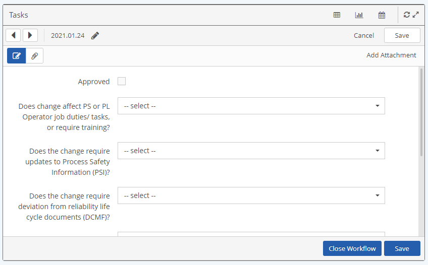
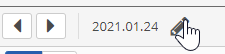
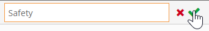
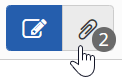
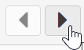

Click the Form icon in the table.
The form for the current workflow step will open showing the associated form fields.

Edit the form fields as needed.
To edit the workflow name, click the pencil icon at the top of the form.

When done, click the checkmark.

After making any edits, click Save to save your changes.
Click Cancel to return to the panel display without saving changes.
Other action buttons may be available depending on the workflow and your permissions.
The Add Attachment link will be displayed on the top right of the form if you have permission to attach files.
To view existing attachments, select the paperclip button. The number of attachments are indicated on the button.

You may view PDFs and images directly and download other document types. See View or Add Attachments for more info.
Click the pencil button to return to the form view.
Click the next or previous arrows to go to the form for the next workflow.

Click Cancel (after saving) to return to the table view. Or select the table  icon on the top bar.
icon on the top bar.